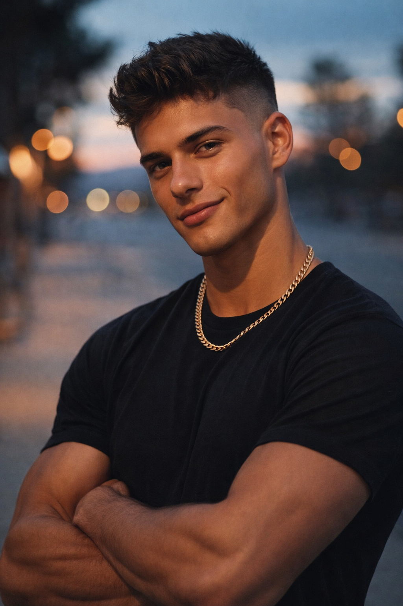
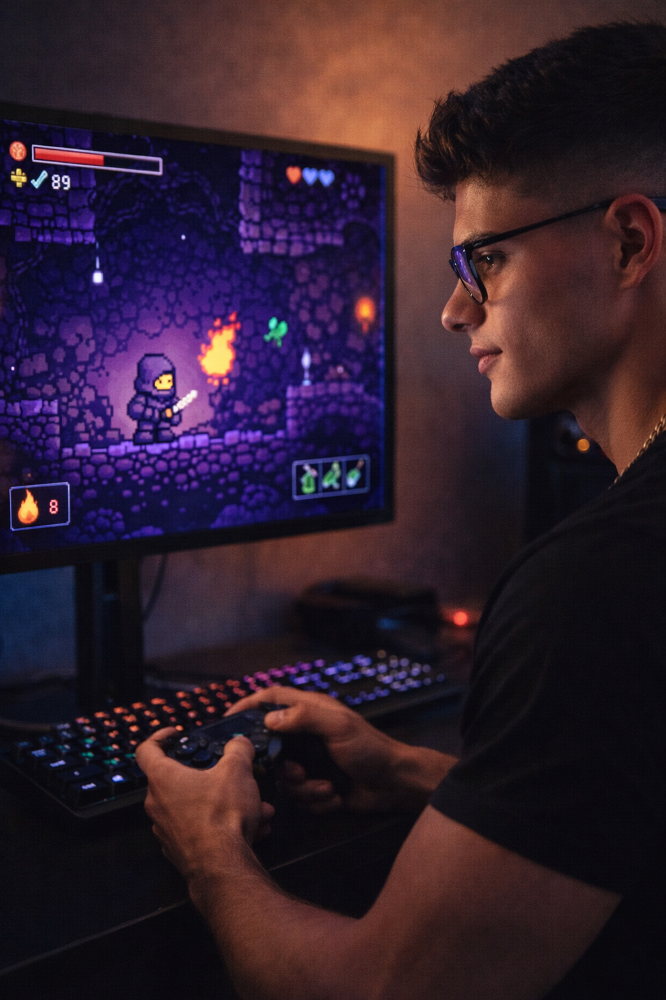

João Pedro
Idade: 18
Sobre
João é um jogador curioso e dedicado, que busca sempre evoluir dentro dos jogos. Ele valoriza experiências profundas, prestando atenção na arte, na jogabilidade e na ambientação, além de gostar de explorar tudo o que o jogo tem a oferecer.
Interesses
Tem interesse em arte, jogabilidade, trilha sonora e ambientação. Gosta de ação, exploração, múltiplos objetivos e de encontrar segredos como easter eggs dentro dos jogos.
Jogos Favoritos
Prefere jogos de RPG, hack and slash, rogue-like e FPS. Costuma jogar títulos como Terraria e CS2, focando tanto na progressão quanto na melhoria de habilidades.
Tipo de Jogos
Gosta de jogos com exploração, combate dinâmico e desafios constantes. Prefere experiências que exijam habilidade, precisão e permitam evolução contínua.
Objetivo da Persona
João busca jogos que ofereçam desafio, progressão e imersão. Ele se frustra com jogos repetitivos e pay-to-win. Este projeto foi criado para oferecer uma experiência envolvente, com exploração, combate e evolução constante.
Onde passa o tempo
Passa tempo jogando, estudando temas como história, conspiracionismo, geografia, ciência, astronomia e teologia. Também consome mangás, manhwas e gosta de usar Discord, além de passar tempo com a família e praticar exercícios como barra fixa.
Objetivos
Busca evolução constante dentro dos jogos, inspirado em progressões como Terraria. Treina sua mira em jogos como CS2 e procura melhorar sua precisão e coordenação motora em jogos de combate.
O que chama atenção
Seu interessa por artes agradáveis, especialmente no estilo cartoon. Gosta de personagens peculiares, ideias criativas e armas diferentes que tragam inovação e diversão.
Frustrações
Se incomoda com jogos pay-to-win, experiências repetitivas e falta de compatibilidade ou acessibilidade nos jogos.
Plataformas
Utiliza principalmente PC para jogar e Discord como principal forma de comunicação.

Setup do Jogador